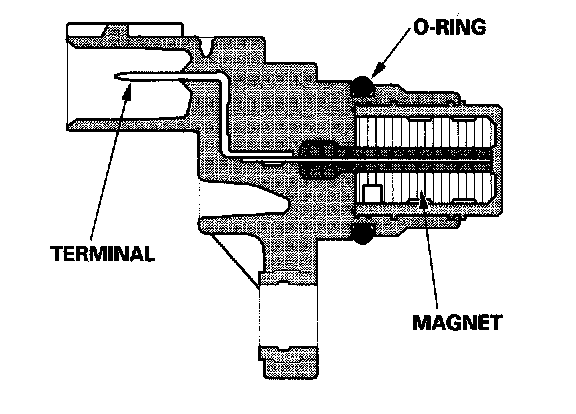

Operation CHARM
: Car repair manuals for everyone.
Home
>>
Honda
>>
2007
>>
Civic Si L4-2.0L
>>
Repair and Diagnosis
>>
Powertrain Management
>>
Sensors and Switches - Powertrain Management
>>
Sensors and Switches - Ignition System
>>
Camshaft Position Sensor
>>
Description and Operation
>>
Camshaft Position (CMP) Sensor B
Camshaft Position (CMP) Sensor B

Camshaft Position (CMP) Sensor B
CMP sensor B detects the position of the NO.1 cylinder as a reference for sequential fuel injection to each cylinder.